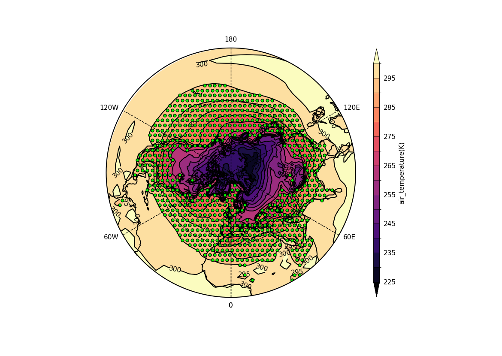

Example 18: Polar stipple plot#
A stipple plot in the North Pole polar stereographic projection.#
f = cf.read(f"cfplot_data/tas_A1.nc")[0]
g = f.subspace(time=15)
cfp.gopen()
cfp.cscale("magma")
cfp.mapset(proj="npstere")
cfp.con(g)
cfp.stipple(f=g, min=265, max=295, size=100, color="#00ff00")
cfp.gclose()
